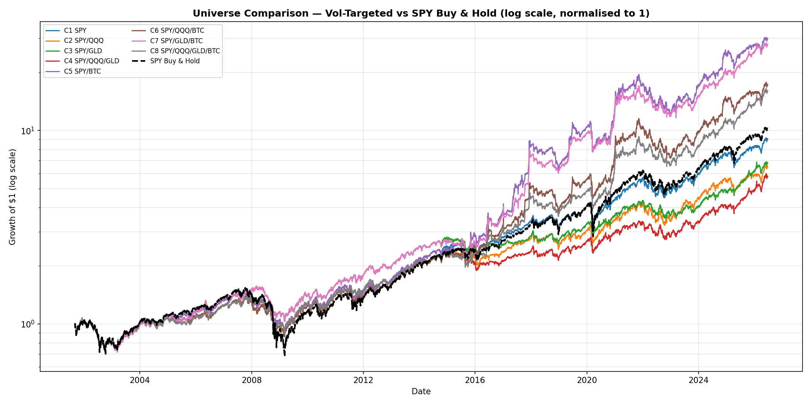
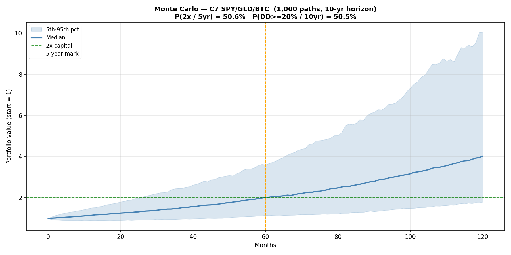
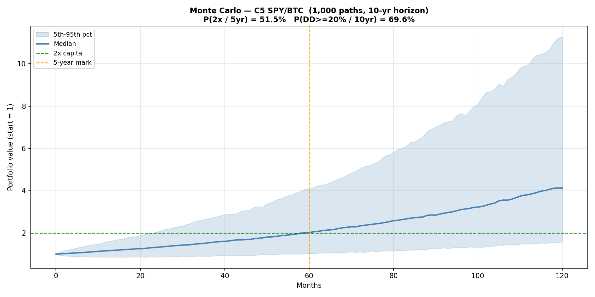
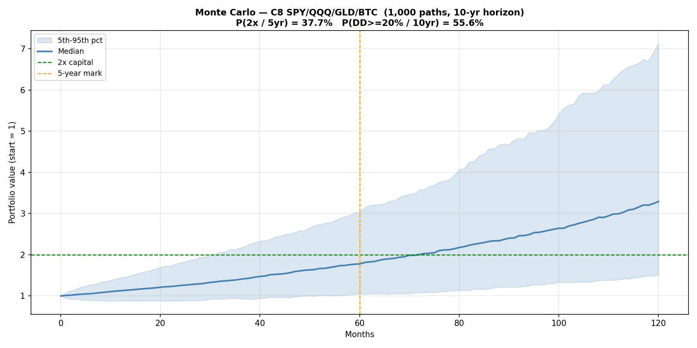

ETF Core
U.S. and global ETFs as a permanent equity core with dynamic vol-targeted allocation to growth, real assets, and digital assets — executed as CEDEARs on the Argentine market.
Why Not Just Pick Stocks
Active stock-picking underperforms in aggregate. The evidence is consistent across decades and geographies: after fees, most active managers trail a simple market-cap-weighted index. The reason is structural — markets price information quickly, and the skill required to exploit the remaining inefficiencies consistently exceeds what most participants can sustain.
The Efficient Market Hypothesis does not say prices are always right. It says that finding and trading on mispricings reliably enough to outperform, net of costs, is extremely hard. The empirical record confirms this. SPIVA data shows that over 15-year horizons, 88%+ of US active large-cap funds underperform the S&P 500.
The rational baseline is a diversified passive position. The question is not whether to own the index, but how to size exposure dynamically as risk changes over time.
Vol Targeting Framework
Static leverage amplifies both returns and drawdowns equally. A strategy that targets a constant level of realized portfolio volatility — scaling exposure up in calm periods and reducing it in turbulent ones — produces a better risk-adjusted outcome without requiring any directional forecast.
This is not market timing. The signal is realized volatility, not expected returns. The strategy does not predict where prices will go; it adjusts how much risk is held as the risk environment changes.
Framework:
- Permanent core: SPY with hard floor at 50%
- Tactical sleeve: GLD / IBIT (inverse downside semi-deviation weighted)
- Sleeve qualification: rolling Sortino vs SPY > 0 over 63-day window
- Vol target: 10–20% annualized downside semi-deviation
- Leverage: max 1.0x (spot ETFs — no derivatives, no margin)
- EMA(10) smoothing on leverage signal
- 10% no-trade band to suppress noise-driven turnover
- Reduce-only intra-month trigger if realized vol exceeds 20%
The downside semi-deviation captures only the left tail — it penalizes negative deviations from zero, not all volatility. This is the correct risk measure for a strategy targeting drawdown control rather than volatility symmetry.
Instrument Rationale
SPY — US broad market core. The S&P 500 is the most liquid, cheapest-to-hold expression of the US equity risk premium. Hard floor at 50% ensures the strategy always participates in the primary growth engine.
GLD — Hard asset hedge. Gold is not correlated with equity returns over long horizons. It earns positive real returns in inflationary and currency-crisis regimes — precisely the periods when equities and bonds both suffer. The correlation benefit is most valuable in the tail, when diversification is needed most.
IBIT (BTC-USD in backtest) — Non-sovereign asymmetric. Bitcoin’s return distribution has positive skewness and near-zero correlation with equities. At a small portfolio weight it adds right-tail optionality without proportionally increasing portfolio volatility. Executed via IBIT CEDEARs (10:1 ratio) on the Argentine market. In the backtest, BTC-USD is used for longer history — IBIT data begins January 2024.
Backtest Results — C7 vs SPY Buy-and-Hold
Single continuous run from 2001-09-04 through 2026-06-25. Assets join when data becomes available: SPY from 2001-09-04, GLD from 2004-11-18, BTC-USD from 2014-09-17. Before inception an asset earns zero return → zero vol → disqualified from the tactical sleeve automatically. No in-sample / out-of-sample split. $10,000 initial capital, zero contributions. 0.50% transaction cost on traded notional.
| CAGR | Sharpe | Sortino | Calmar | MaxDD | CVaR95 | CVaR99 | TailRatio | Skew | Kurt | |
|---|---|---|---|---|---|---|---|---|---|---|
| Strategy | +11.58% | 0.826 | 0.809 | 0.334 | -34.71% | -2.14% | -3.64% | 1.011 | 0.255 | 18.92 |
| SPY buy-and-hold | +8.01% | 0.533 | 0.459 | 0.145 | -55.19% | -2.68% | -4.63% | 0.940 | 0.046 | 16.94 |
Strategy outperforms SPY B&H on every metric. MaxDD -20pp better (strategy -34.7% vs SPY -55.2%). Calmar 2.3x better.

Log scale, normalised to 1 at 2001-09-04. Weekly rebalance, no contributions.
| Config | CAGR | Sharpe | Sortino | MaxDD | Period |
|---|---|---|---|---|---|
| C1 SPY | 7.6% | 0.61 | 0.54 | -37.9% | 2001–2026 |
| C3 SPY/GLD | 6.6% | 0.58 | 0.51 | -34.6% | 2001–2026 |
| C5 SPY/BTC | 12.0% | 0.76 | 0.74 | -37.9% | 2001–2026 |
| C7 SPY/GLD/BTC | 11.7% | 0.81 | 0.80 | -34.6% | 2001–2026 |
| SPY Buy & Hold | 9.9% | 0.59 | 0.56 | -55.2% | 2001–2026 |
C7 selected: best Sortino and best MaxDD among all configs. QQQ excluded — adds correlated equity risk without improving risk-adjusted return.
Monte Carlo — Top 3 by Sortino
1,000 bootstrapped paths over a 10-year horizon, resampled monthly from the historical backtest return distribution.
C7 SPY/GLD/BTC — highest Sortino (0.80), best drawdown control

P(2x capital in 5yr) = 50.6% | P(MaxDD ≥ 20% in 10yr) = 50.5%
C5 SPY/BTC — highest CAGR (12.0%)

P(2x capital in 5yr) = 51.5% | P(MaxDD ≥ 20% in 10yr) = 69.6%
C8 SPY/QQQ/GLD/BTC — full diversification

P(2x capital in 5yr) = 37.7% | P(MaxDD ≥ 20% in 10yr) = 55.6%
C7 dominates on a risk-adjusted basis: similar return to C5 with meaningfully lower drawdown probability.
Execution Layer
The strategy runs as a Python process on Railway (24/7). The monthly flow is conversational, driven by a Telegram bot:
- Last trading day of month → bot asks for last month’s fill confirms
- User replies with nominales:
YES SPY 21 QQQ 43 GLD 0 IBIT 79 - Bot fetches live prices and MEP rate, runs signal, sends sizing table
- User executes manually via broker app, replies
FILLED - Bot updates holdings on Railway persistent volume
Intra-month vol breach: bot sends a REDUCE alert automatically at market close if realized portfolio vol exceeds 20%.
Current broker: Balanz (manual execution, no API). Target broker: IOL (API available — integration pending ID verification).
Disclaimer. These are hypothetical backtested results. They were not achieved by any investor. Hypothetical performance does not reflect the impact of taxes, brokerage fees, slippage, or the inability to execute at historical prices. Past hypothetical performance is not a reliable indicator of future results. This is not investment advice.
© 2026 Dog Capital